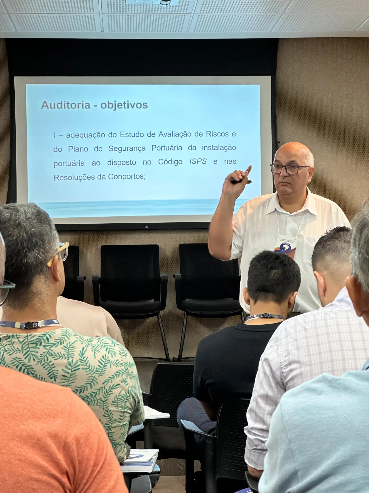

ISPS Code, certificações e capacitação
INTELIGÊNCIA
Grupo de Trabalho ISPS Code
A ANTAQ participa para aprimorar a aplicação do código de segurança, com foco na revisão de normas e na segurança em portos brasileiros.
Certificações de Segurança
Emissão da Declaração de Cumprimento para terminais portuários, atestando a conformidade com os requisitos de segurança.
Capacitação e Educação
Curso Nacional de Auditoria em Instalação Portuária: formação de agentes para auditorias de conformidade.

Trilha Técnica da Fiscalização · SFC / GPF — ANTAQ
55 / 61